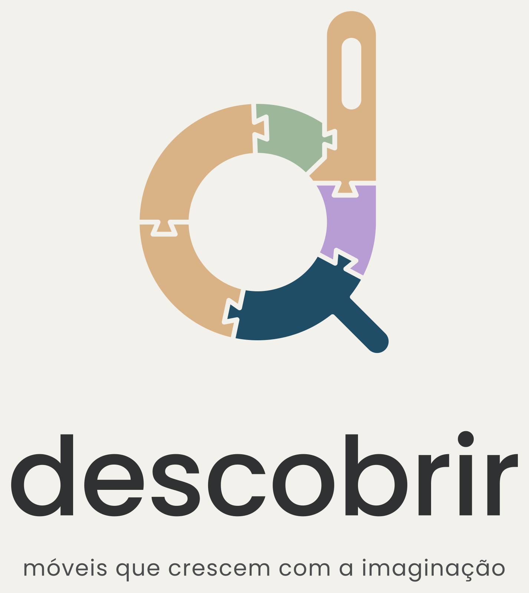

Conjunto Descobrir
Veja a mesa e a cadeira em tamanho real
Ver no meu espaço
117 cm
largura
62 cm
profundidade da mesa
93 cm
altura
Toque em
Ver no meu espaço
.
Aponte a câmera para o chão e mova o celular devagar.
O conjunto aparece em tamanho real: dá para andar em volta.